What does it mean to see? These notes follow the Day 1 lecture: why a picture is not a scene, what the visual system assumes, and what computer vision is asked to recover.
The question
Seeing feels instant. That is why the difficulty is easy to miss. The question for the course is what it actually means to see, for a brain and for a computer. Today opens the question. Later we open one image as numbers.
How the course works
The three weeks put human vision and machine vision side by side. The work is hands-on, from pixels to learned models. At each step the question is the same one from this morning: what does the system actually receive, and what does it infer. You build the thing, and you also say where it fails.
By the end you can load and change images in Python, use a pretrained model, and build an application of your own. You present the design, the result, and the limits. Labs, homework, and that project are the work of the course.
Co-design means we learn what you already know and what you want to build. The questionnaire today is the start. Later days, and the final project, bend toward those interests.
Every class follows the same rhythm.
Intro question, to start thinking.
Lecture, on the concepts.
Lab. Today that is the checker-shadow image as an array. Tomorrow is a system that recovers boxes.
Exit question: what stuck?
Why vision is hard
Two different difficulties. A camera stores only brightness. And even a clean drawing still fits many solid shapes.
The input is a table of numbers
A camera does not store objects, edges, or distance. It stores a brightness at every pixel. Take one small patch and write it out as a table, called I. Each entry is the brightness of one pixel, about 0 for black and about 255 for white, on a grid of roughly sixteen rows and sixteen columns.
In the middle columns the values fall off, through the hundreds, into the twenties and thirties, then climb again. That dip is a dark vertical stroke, but the table does not say so. There is no edge in the list, no object, and no depth. This list of integers is the whole input.
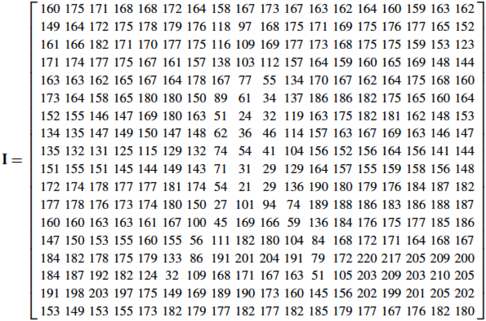
The patch as the table I. The dip in the middle columns is the dark stroke. The table does not say so.
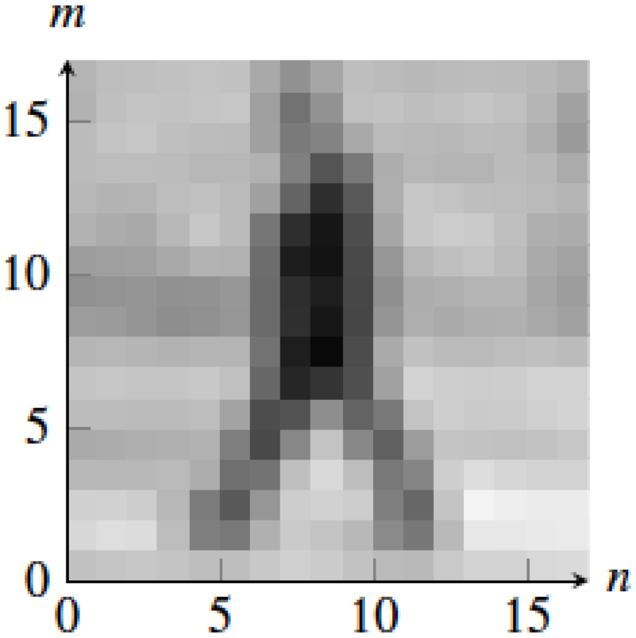
The same numbers, drawn. Row m, column n.
Nothing was added between the table and the picture. Painting the numbers is enough for a person to see a bar.
The camera is a measurement device, not a vision system. Measurement is the table. Seeing is whatever has to be inferred after that. Tomorrow’s lab starts from an array like this one.
One drawing, many shapes
A line drawing tells us the x and y of each point, and not how far away it is. Each corner could sit anywhere along its line of sight. Most of us see a cube, and a cube is a perfectly good answer. Other shapes fit the same lines of sight just as well. There are infinitely many 3D shapes consistent with one drawing.
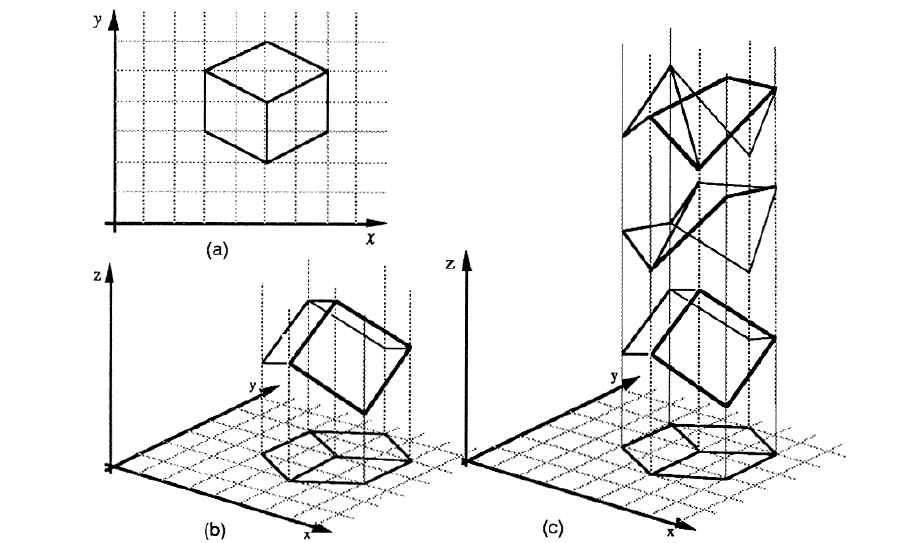
The classic figure. (a) The drawing gives x and y. (b) and (c) Different solids sit on the same lines of sight and land on that one drawing.
Slide each shape down its lines of sight onto the image plane and every one of them lands on exactly the same drawing. The problem is ill-posed: one image, infinitely many 3D shapes. We still saw a cube. The visual system has to choose, and it chooses using assumptions about the world.
Assumptions about the world
Vision is not a measuring device. It makes assumptions, and those assumptions are usually the right answer about the world even when they are the wrong answer about the pixels.
Light versus surface: the checker shadow
Edward Adelson’s checker-shadow illusion (1995) is a checkerboard with a cylinder casting a shadow across it. Look at the squares marked A and B. Which is darker? Most people say A, clearly.
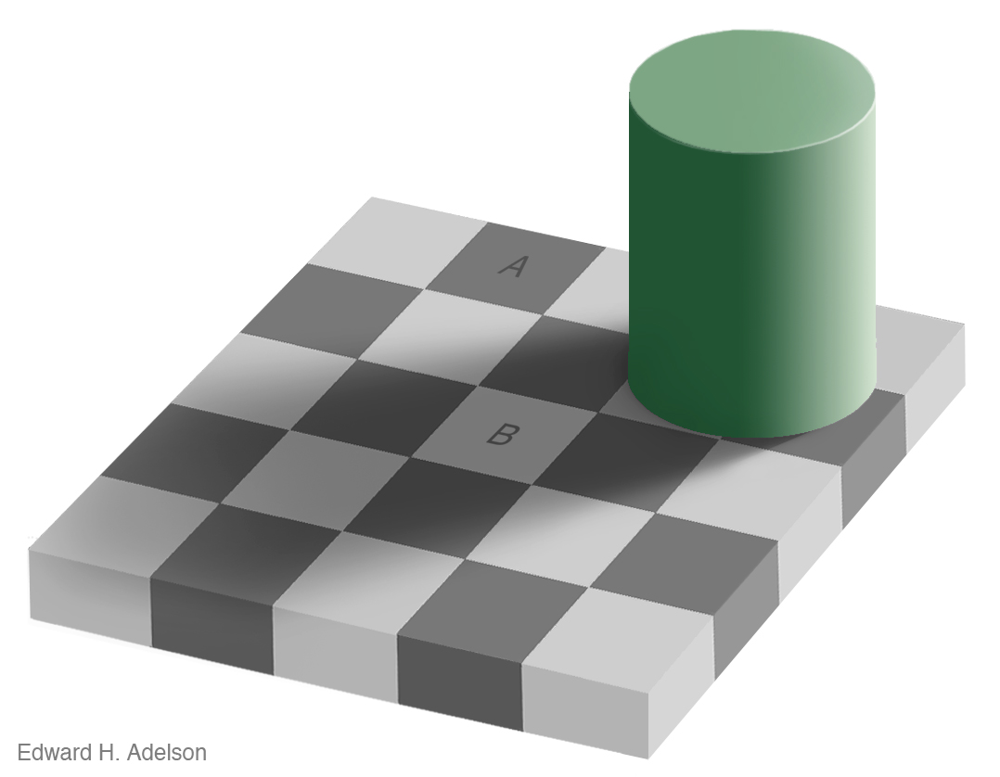
Checker-shadow illusion, Edward H. Adelson, 1995. A and B are the same gray. The lecture then draws two bars of A’s gray down into B, and the edge disappears.
Draw two bars in exactly the gray of square A, running from A down to B. Where the bars meet B there is no edge at all. A and B are the same gray. The visual system assumes B sits in a shadow and corrects for it. It reports the color of the surface, not the light reaching the eye.
Size and distance: Emmert’s law
A second assumption pairs size with distance. In a corridor, two white spheres of equal size sit on the screen. Most people say the farther one looks larger. Set the two circles side by side and they have the same diameter.
Emmert’s law: the size we see scales with the distance we see. The visual system does not report the size of the patch on the retina. That slide is drawn live in the lecture, so there is no still to put here.
What human vision computes
The brain does not receive a finished picture. Light comes in, and a chain of stages turns it into contrast, edges, objects, and actions. A machine later in the week does a cousin of this: local filters, then a name.
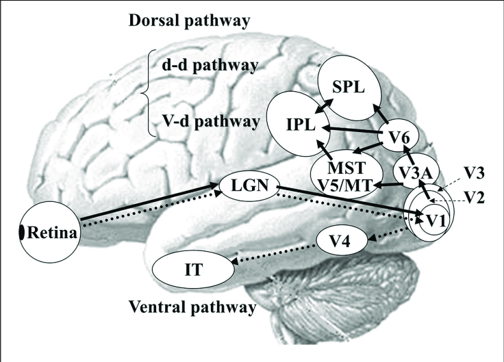
Light lands on the retina, then LGN, then V1. The ventral stream runs toward inferotemporal cortex. The dorsal stream runs up into parietal cortex. The figure source is still to add.
From the eye to V1
Light enters through the pupil. The lens focuses it on the retina, a thin sheet of neurons on the back of the eye. The retina is not film. Processing starts before anything leaves the eye, and light has to pass the other cell layers to reach the photoreceptors at the back.
Rods work in dim light, with no color and a coarse picture. Cones work in brighter light and carry the detail, packed into the fovea. Three cone types, L, M, and S, prefer long, medium, and short wavelengths. Color is the brain comparing those three responses, not a paint stored in the eye.
Many ganglion cells have a center-surround receptive field. They fire for a bright spot on a dark ring, or the reverse, and stay quiet on a uniform field. A flat wall is quiet and a boundary is loud. The signal emphasizes edges and local contrast: early feature extraction, the biological version of a spatial filter.
The axons of the ganglion cells leave as the optic nerve. They reach the lateral geniculate nucleus, the LGN, in the thalamus, and then primary visual cortex, V1, at the back of the head. The LGN organizes the signal on the way. It is more than a relay.
In V1, Hubel and Wiesel found cells that prefer a bar at one orientation: vertical for one cell, horizontal or diagonal for another. A simple cell cares about the position of that edge. A complex cell keeps the orientation and cares less about the exact place. Nearby places in the world land nearby on the cortex, and the fovea takes far more than its share of that map. An early layer of a convolutional network is the machine version: filters for edges, gradients, and simple texture.
Ventral stream: what
One stream runs down and forward, from V1 through V4 into inferotemporal cortex. This is the ventral stream. It builds shape, color, objects, and faces. Face-selective cortex, including the fusiform gyrus, is part of this stream.
The hard part is invariance. Position, angle, distance, lighting, and occlusion all change the image, and the object stays the object. The same cup can make a different image from another angle, another distance, or another light, and we still know it is that cup. A classifier that names a photograph is attempting this job, and it can be confidently wrong.
Dorsal stream: where and how
The other stream runs up into parietal cortex. This is the dorsal stream. It carries position, motion, depth, and the information used to reach or to move around something. Area MT, also called V5, prefers motion in a direction and at a speed. Catching a ball, or reaching for a glass, needs this stream: where it is, how it is moving, and what the hand should do. Optical flow, tracking, and a robot arm are the machine versions. Recognition alone does not pick up the cup.
The two streams are not a wall. Look at a bicycle. One stream says it is a bicycle. The other says where it is, whether it is moving, and how to reach it or step around it. A name is not a reach. If you can name a cup and cannot reach it, the split is a real division of labor.
A history of theories of seeing
The argument about seeing is old. Computer vision is the late chapter. These accounts are from Foundations of Computer Vision, chapter 1.3.
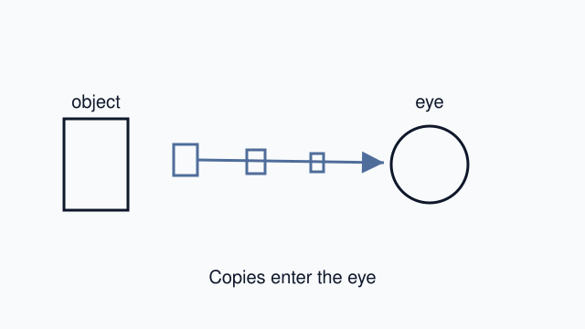
Early intromission
Ancient atomists · c. 400–50 BCE · object to eye
Objects shed tiny copies, eidola, and those copies enter the pupil. The eye receives something from the world. It does not shine on the world. This is the ancestor of treating sight as something physical that arrives. It is not yet a camera, and it is not modern physics.
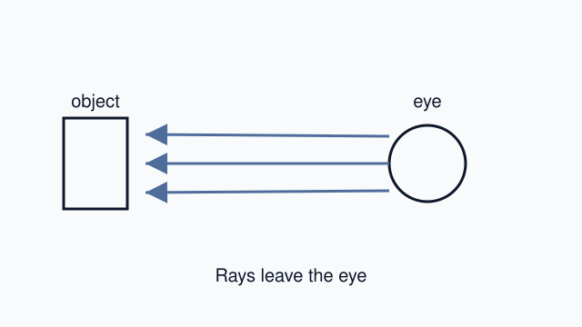
Extramission
Euclid · c. 300 BCE · eye to object
The eye sends rays out. The rays touch objects and measure angles and distance. That is the first mathematical account of perspective. Perspective drawing, and a camera model, still use that geometry. The rays do not actually leave the eye.
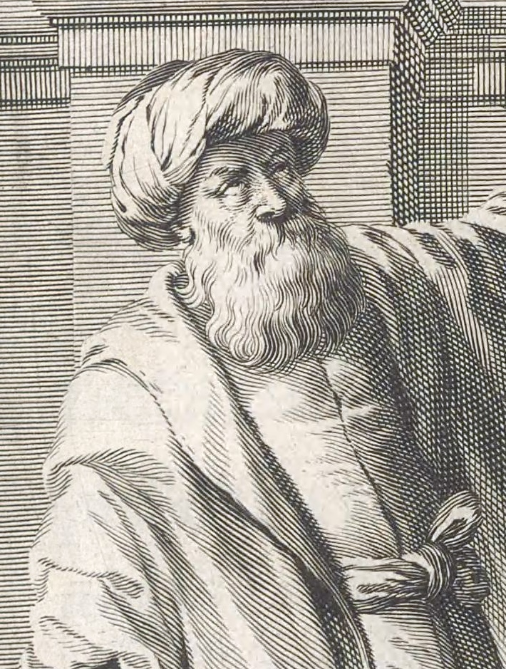
Mathematical intromission
Ibn al-Haytham · Book of Optics, c. 1011 · object to eye
Light reflects from every point of an object into the eye. The rays that come in straight are the ones that form a clear image. He rejected rays leaving the eye. A dark room with a small hole, a camera obscura, shows the light coming in and forming a picture. He used that room as the demonstration. He did not invent it. The picture still is not the scene. Tomorrow we recover boxes only by adding assumptions. The face is an imagined engraving from 1647, not a sitting.
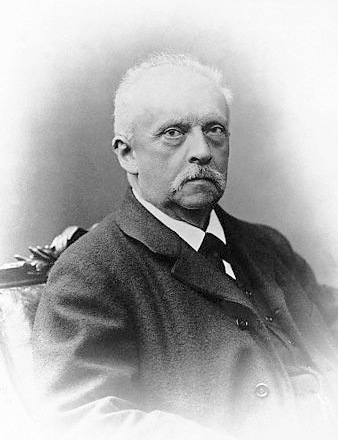
Unconscious inference
Hermann von Helmholtz · 1867 · the brain, from the retinal image
The retina delivers a messy signal. The brain applies what it already knows and picks the best guess about the object that made the light. Helmholtz called ordinary seeing an unconscious conclusion. Press on a closed eye and you see light: the guess was wrong about the cause. Predictive processing, and a generative model, are this idea in a new machine. The guess can be wrong. On Day 3 a network can name an elephant statue a triceratops. The percentage is the guess, not proof.
Gestalt theory
Max Wertheimer · 1912 · the brain, grouping the parts
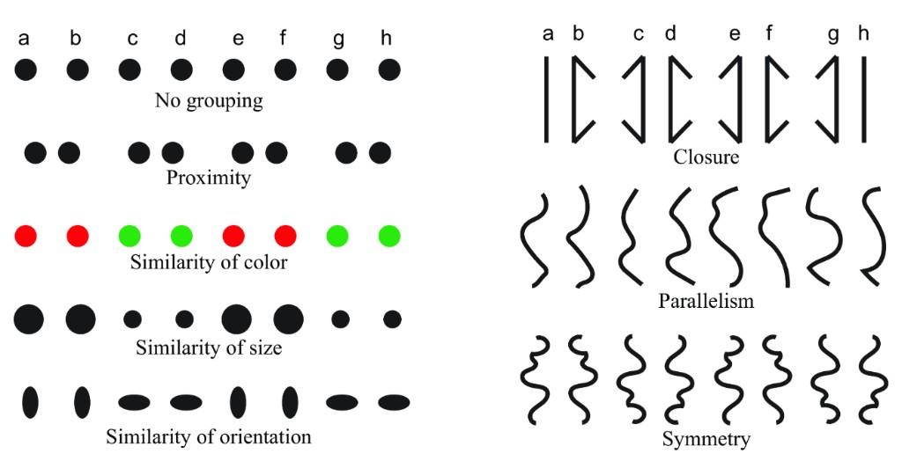
Grouping laws. Left: no grouping, then proximity, then similarity of color, size, and orientation. Right: closure, parallelism, and symmetry.
The mind groups marks into wholes before it lists the parts. Near marks group. Marks of the same color, size, or orientation group. Closed, parallel, and symmetric marks group. Raw marks are not yet objects, and the early theory did not say how these laws compete. A vision system still has to decide which edges are one thing. On Day 3 a cube gets grouped as a chest: the grouping ran, and the object is wrong. Layout, interface design, and pattern recognition still use these laws.
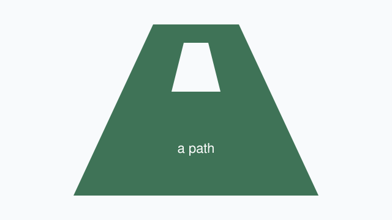
Ecological psychology
James J. Gibson · 1979 · environment and body, both ways
A moving observer picks up structure in the light. As you move, the optic array changes in a structured way, and that structure specifies the layout. A path affords walking. An obstacle affords collision. Gibson rejected Helmholtz’s hidden guess: if the light already says what the place lets you do, you do not need a hidden conclusion. A car that must drive, or a robot that must reach, needs the use of the scene, not only a name. Tomorrow we still recover boxes. That is a task we chose, not an affordance. The diagram is ours: a path on the ground.
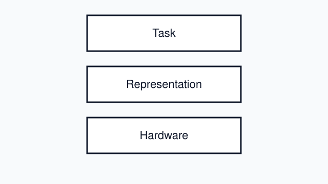
Computational vision
David Marr · Vision, 1982 · from the image to a 3D model
Three levels, and they can be studied apart. The computational level asks what the task is, and why. The algorithm asks which facts are made explicit, and by what steps. The implementation is the eye, the brain, or a computer. Raw intensities become a 3D description. Edge finding is one of the early steps. The same task can run on an eye or on a computer. Tomorrow writes the task: projection, edges, assumptions, boxes. The day after does not derive that theory. It runs a pretrained network. Marr is how we tell those two days apart. The drawing is a class diagram. The book is 1982, after his death in 1980.
Computer vision is the late chapter
The same question, in a short recent history of methods.
Geometry. Write the rules: a world of boxes, a camera, and equations.
Designed features. A person decides what to measure. Edges, corners, texture. The system measures what we told it to measure.
Learning. The features come from data, not from a person writing the rule. Deep learning, and systems that generate images as well as read them. The argument about seeing is the old part. The network is the new implementation.
Torralba, Isola, and Freeman, Foundations of Computer Vision, chapter 1.3.
Can computers do the same?
The brain solves this all the time. Computers do some of it, and not the rest.
Computer vision is getting information about the world from images. The input is a picture. The output is something the picture does not store: a name, a distance, a shape.
Where it is starting to work
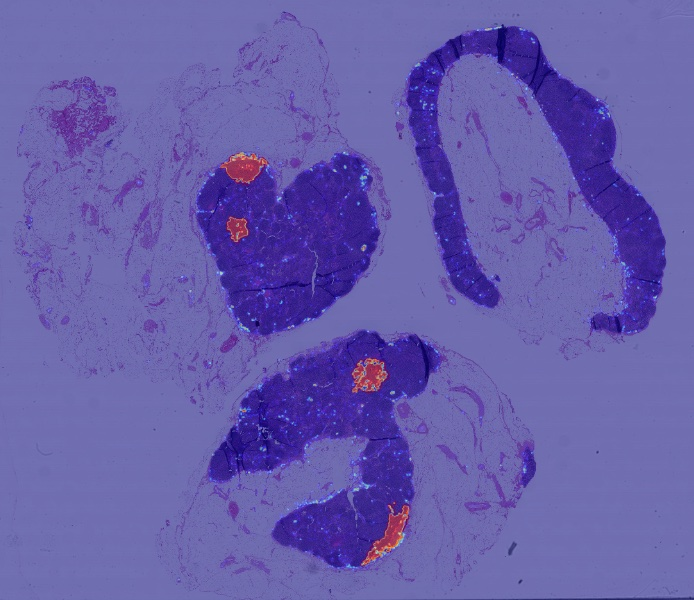
Healthcare
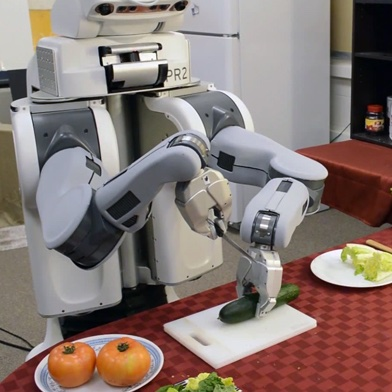
Robotics
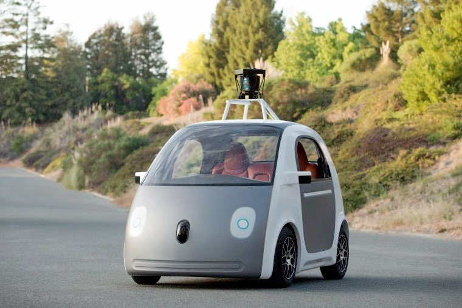
Driving
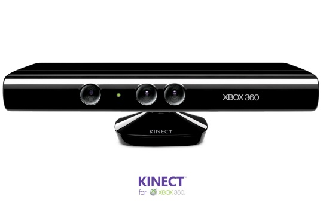
GamingAccessibility
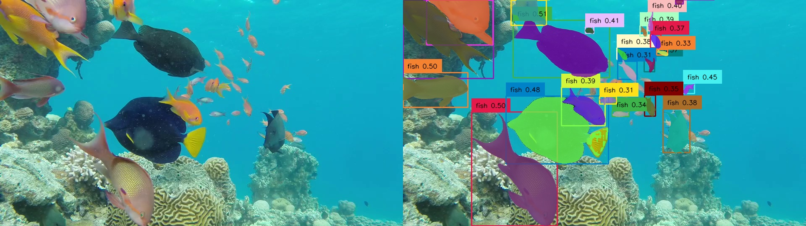
Ecology
Healthcare. Finding structures in medical and microscopy images.
Robotics. Robots that see what they are handling.
Driving. Self-driving cars.
Gaming. Depth cameras, such as the Kinect, that track a body.
Accessibility. Automatic descriptions of photos for people who are blind or have low vision.
Ecology. Detecting and counting animals, such as fish on a reef.
Recombining concepts
One reason recent models are powerful is that they recombine concepts to make something new. The lecture showed three generated images, from the prompt “a cup of coffee, a cat, and a cup of cat.” Given a text input the model was not handed as one labeled thing, it can put the cup and the cat in the same picture. That ability is compositionality. It is a large part of the creativity of these models, and the examples were not a single lucky image.
A few years ago an object detector, shown a bathroom sink, reported a sheep, an airplane, a bed, and a horse. The boxes below are the ones the lecture drew on this photo. The same field now produces a cup of cat. That is how fast the methods have moved, and why this is a useful time to learn how they work.
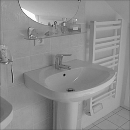
SheepAirplaneBedHorse
The photo is the lecture’s. The four boxes are placed where the slide drew them. Image source still to add.
Classification names the one thing in the picture. Detection finds each instance and where it is. Recognition returns the objects in a scene, not only one class.
Tracking follows those objects over time and keeps an identity for each. Event detection says when something happened, such as an item picked up. Pose is the position of a body, a hand, or a set of points.
Depth is how far, from one camera or from two.
Generation makes a new image. Diffusion models are the current way.
Industries, from the same guide
Shops
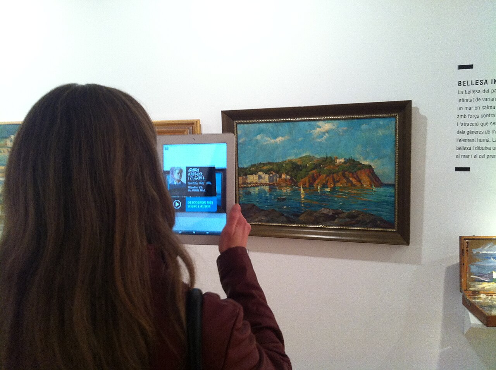
Augmented reality
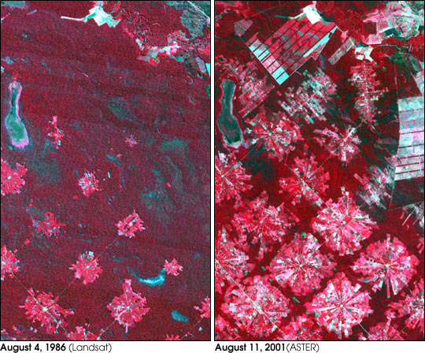
Maps
Driving. Assistance, levels 1 and 2: staying in a lane, braking, parking. Autonomous vehicles, levels 3 to 5, with little or no human input. The seeing task is the road, other cars, and people.
Health. Diagnostics, watching a patient, and research. Medical images share a standard format, DICOM, which is what made these sets usable.
Shops. A checkout that sees what was picked up. Matching the same product across photos, and dropping duplicates. Generated pictures of products.
Robots and farms. Moving inventory, finding a defect, harvesting, and disease on a plant.
Software. Augmented and virtual reality, something added to a view you already have. And content understanding: recommendations, and trust and safety.
Maps and the public sector. Overhead imagery and video: ordinary cameras, radar, and full-motion video. The guide’s examples are damage after a disaster or a war, reconnaissance, a perimeter, and a forest or a coastline.
Practice, then a group question
The same checker shadow is now a grid of numbers. In Images as arrays, open the notebook in Colab, choose File, Save a copy in Drive, and work in that copy. You read pixels, including squares A and B, which are the same gray, then slices, channels, brightness, and contrast.
In groups of four, pick one application you just heard, or another you care about. Four answers, one sentence each.
What problem does it solve? The problem in the world, not the name of a model.
How is that like human vision? Recognizing, finding, tracking, judging distance, reading a scene.
What does the system actually see? A photo, a video, or something else. Say which.
Where could it be wrong? Darkness, a rare case, a thing that looks like something else. Pixels, a simple system, or a model that can be confidently wrong.
After class
Day 1 questionnaire. Background and what you want to learn. There are no right or wrong answers.